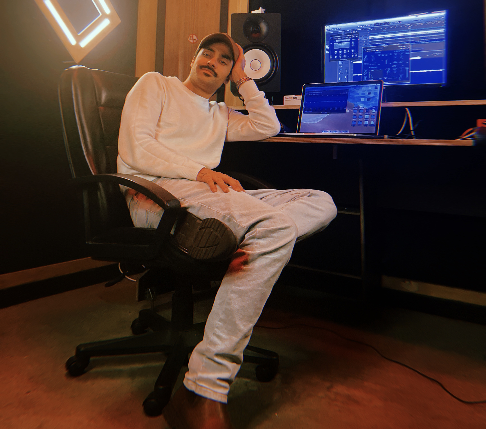

Sound
- Sound Design
- Field Recording
- Foley / Dialogue Editing
- Mixing & Mastering
- Music Production
- Podcast Production
About
I create immersive audio and digital experiences where sound, technology and storytelling meet.

I'm a sound engineer and creative technologist working across sound design, music production, podcasts, field recording, audiovisual systems and ineractive experiences.
My background spans studio production, audio post-production, and multilingual content creation, alongside hand-on AV work supporting live events, collaboration spaces and broadcast-style environments. I'm particularly interested in the point where sound, technology and production come together - from recording and mixing to interactive audio, live workflows and digital experiences.
Having worked across international projects, I'm comfortable producing and collaborating in English, Portuguese, Spanish and Italian, with experience creating audio for different languages, audiences and culutral contexts.

Skills & Tools
Get In Touch